UMAP ZOO
 
This site uses the
UMAP
algorithm and
THREE.js
to project 3D Wavefront files into 2D. For information on how UMAP works, see the
conceptual overview
or
technical paper
written by the library's author, Leland McInnes.
